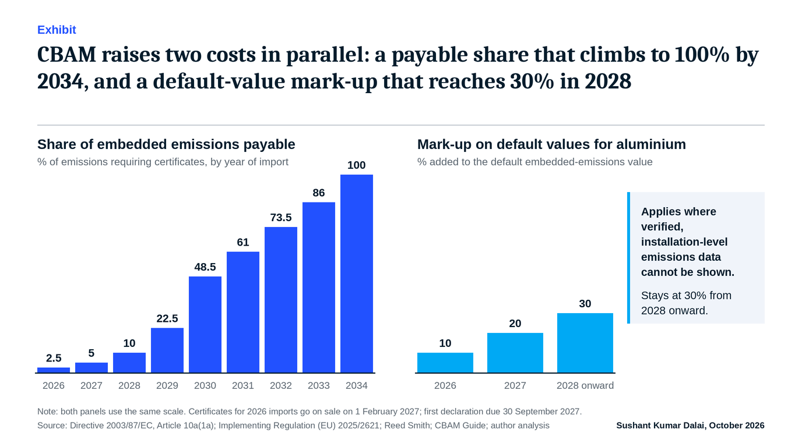

C-suite briefing
CBAM’s 2026 bill is small. Its consequences for aluminium sourcing are not.
A C-suite readiness brief for aluminium producers, traders and EU-bound buyers
Sushant Kumar Dalai · Industrial decarbonisation and circular economy · Dubai · October 2026
Executive summary
- Reporting has become liability. The EU Carbon Border Adjustment Mechanism (CBAM) entered its definitive phase on 1 January 2026. Certificates for 2026 imports go on sale on 1 February 2027, and the first annual declaration is due by 30 September 2027.
- The 2026 cash cost is deliberately small; the trajectory is not. Only about 2.5% of the gross certificate obligation is payable this year, rising to 48.5% in 2030 and 100% in 2034. The certificate price is already moving: €75.36 in Q1, €75.28 in Q2 and €82.32 in Q3 2026.
- The immediate exposure is data. Importers that cannot evidence installation-level emissions fall back on default values carrying a mark-up of 10% in 2026, rising to 30% from 2028 for aluminium.
- Low-carbon and recycled material has a structural advantage, but only if it can be evidenced. Global primary aluminium averages 15.1 tCO₂e per tonne; processing scrap emits about 0.52 tCO₂e per tonne (IAI).
- Five executive moves can start now, before the money is large: exposure mapping, a data spine, supplier terms, carbon-aware commercial terms and a recycled-content proposition.
1. The regime has changed from reporting to financial liability
Between October 2023 and December 2025, CBAM was a data exercise: importers reported embedded emissions and bought nothing. Since 1 January 2026 the definitive regime applies. Covered goods may enter the EU only through an authorised CBAM declarant, embedded emissions are declared once a year and approved by an accredited verifier, and certificates are priced off the EU Emissions Trading System (ETS). In 2026 the Commission publishes one certificate price per quarter; from 2027 it will publish weekly prices.
Aluminium sits in scope alongside iron and steel, cement, fertilisers, electricity and hydrogen, and the Commission has extended the scope to selected downstream steel and aluminium products from 2028.
| Date | Milestone |
|---|---|
| Oct 2023 – Dec 2025 | Transitional phase: reporting only, no certificates to buy |
| 1 Jan 2026 | Definitive phase begins: authorised declarants only; 2.5% payable |
| 4 Jan 2027 | Q4 2026 certificate price published |
| 1 Feb 2027 | Certificate sales open; weekly prices replace quarterly prices |
| 30 Sep 2027 | First declaration and surrender deadline, covering 2026 imports |
| 2028 | Scope widens to downstream aluminium and steel products; 10% payable; default mark-up at 30% |
| 2030 | 48.5% payable, the steepest step (up from 22.5% in 2029) |
| 2034 | 100% payable: free allocation fully phased out |
2. The cash cost is small today; the trajectory is the story
CBAM mirrors the phase-out of free EU ETS allowances. Because EU producers still keep 97.5% of their free allocation in 2026, imports face roughly 2.5% of the gross obligation. That share rises every year, and the steepest step arrives soonest: from 22.5% in 2029 to 48.5% in 2030, more than doubling in twelve months.

Price risk sits on top of that ramp. The Commission’s quarterly certificate price moved from €75.36 in Q1 to €75.28 in Q2 and €82.32 in Q3 2026, a 9.4% rise in the latest quarter. The Q4 price is due on 4 January 2027.
The implication for contracts. Multi-year supply and offtake agreements signed today are priced against a 2.5% exposure but will be performed against 48.5% in 2030 and 100% in 2034. Who carries that step-up, whether producer, trader or buyer, should be written into the contract now rather than discovered in 2029.
3. The 2026 risk is data, not cash
The first declaration will not be judged on how much carbon a supplier emits, but on whether it can prove it. Where actual embedded emissions cannot be evidenced, importers must use the Commission’s default values (Implementing Regulation (EU) 2025/2621). These are deliberately conservative: they carry a mark-up of 10% in 2026, 20% in 2027 and 30% from 2028 for aluminium. EU importers act as the declarants, so data requests will flow upstream to their suppliers.
This is where recycled and low-carbon material has a built-in advantage. The International Aluminium Institute (IAI) reports a global carbon footprint of 15.1 tCO₂e per tonne for primary aluminium (mine to cast house, 2022) against 0.52 tCO₂e per tonne for processing scrap (gate-to-gate), about 3% of the primary figure. The IAI cautions that the recycled figure excludes emissions embodied in the scrap and should not be read as the footprint of recycled aluminium.
The advantage is real, but it has to be demonstrated: segregated scrap sources, chain of custody and verifiable emissions data. In my own work defining supplier-qualification, chain-of-custody and CBAM-aligned documentation requirements for secondary-aluminium sourcing, the discipline is simple to state and demanding to execute: every tonne of material needs a traceable origin and a defensible emissions figure.
4. Five moves for the executive team
| Move | What it means in practice | Natural owner |
|---|---|---|
| 1. Map the exposure | Quantify CBAM-covered volumes by product, origin, customer and supplier; model cost at the Q3 price (€82.32) across the 2026–2034 phase-in path | CFO with Head of Trade |
| 2. Build the data spine | Establish installation-level emissions data and a route to accredited verification; stop relying on defaults | COO / Head of Sustainability |
| 3. Rewrite supplier terms | Add traceability, chain-of-custody, data-sharing and audit rights to supplier qualification and contracts | CPO / Head of Procurement |
| 4. Price carbon into commercial terms | Allocate the phase-in step-up between producer, trader and buyer; use scenario bands rather than a single price | CCO / CFO |
| 5. Turn evidence into a proposition | Package recycled-content and verified low-carbon material for customers who must report upstream emissions | CCO / CEO |
Governance. Name one accountable executive and bring a single CBAM dashboard to the executive committee each quarter, covering exposure, data coverage, supplier readiness and price scenarios.
Five questions for the board
- What share of our EU-bound volume could we evidence today with verified, installation-level data?
- Which contracts signed this year will be performed after 2029, and who carries the cost step-up?
- Which suppliers cannot provide traceable origin and emissions data, and what is our fallback?
- What is our exposure at the Q3 price, and across a scenario band around it?
- Where could recycled or verified low-carbon material protect a customer relationship?
About the author
Sushant Kumar Dalai is an industrial decarbonisation and circular-economy leader with 16+ years of experience across alumina, aluminium and industrial supply chains in the UAE, Saudi Arabia and India. A former Director – Strategic Partnership at ACCLRT and a PMP-certified chemical engineer, he advises on circular aluminium, CBAM readiness and AI-enabled manufacturing efficiency. Views are his own. Connect on LinkedIn.
Sources
- European Commission, Carbon Border Adjustment Mechanism overview: taxation-customs.ec.europa.eu
- CBAM certificate price, Q1–Q3 2026: SteelOrbis (6 October 2026); AL Circle (6 October 2026); Eurometal
- Phase-in schedule 2026–2034: Reed Smith, “EU Carbon Border Adjustment Mechanism” (2023); CBAM Guide, “CBAM Timeline 2023–2034”
- Default values and mark-ups: AL Circle (7 August 2026); CBAM Guide, “EU CBAM: The Complete Guide 2026”
- Certificate sales and declaration deadline: Expometals; Foundry Planet
- Carbon footprint of primary and recycled aluminium: International Aluminium Institute (international-aluminium.org)